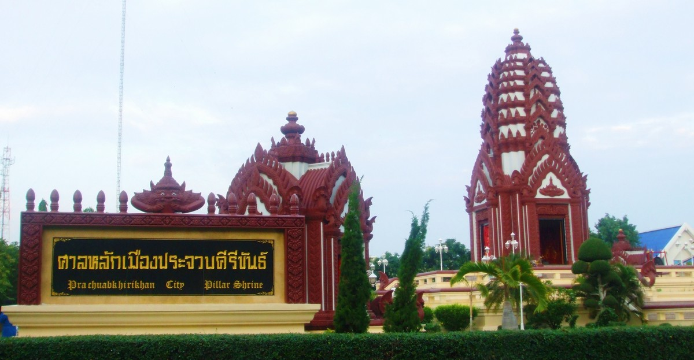
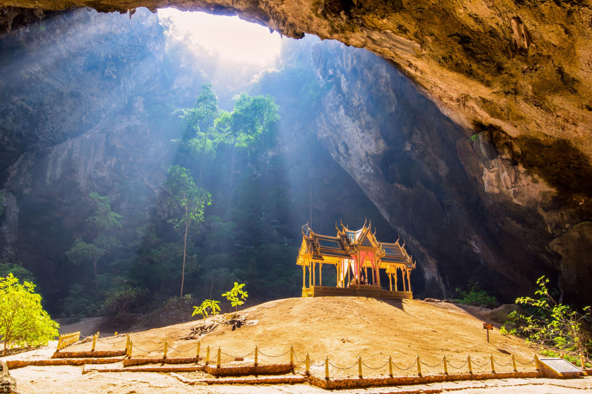

เที่ยวบ้านเราในหนึ่งวัน
สถานที่ท่องเที่ยวจังหวัดประจวบคีรีขันธ์






ชวนเดินตลาด ชิมอาหารพื้นถิ่น และพักชมวิวในชุมชน
เริ่มจากจุดที่คุณสนใจ
เลือกสถานที่ที่อยากไป แล้วจัดเส้นทางให้เหมาะกับเวลาของคุณ
ดูแหล่งท่องเที่ยว